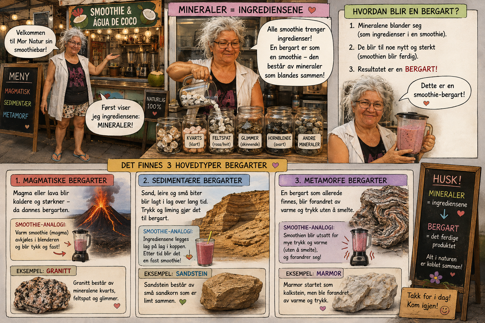
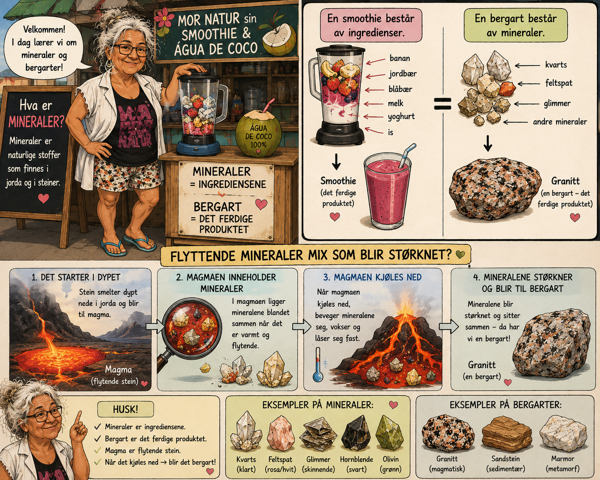

Uken avsluttes · Overføring
Mor Naturs smoothiebar
Ikke om bergarter denne gangen – om smoothies! Kan du kjenne igjen det samme mønsteret i noe helt nytt?
Hvorfor denne historien er annerledes
Du har lært mye om ekte bergarter. Nå tester vi noe vanskeligere: kan du se det samme mønsteret i en smoothiebar? Ingen magma her – bare bær og blender.

Velkommen til Mor Natur sin smoothiebar!
«Mineraler = ingrediensene! Alle smoothier trenger ingredienser. En bergart er som en smoothie – den består av mineraler som blandes sammen.»
Slik blir en bergart: 1) Mineralene blander seg. 2) De blir til noe nytt og sterkt. 3) Resultatet er en bergart!
1. Magmatiske bergarter
Magma eller lava blir kaldere og størkner – da dannes bergarten.
Smoothie-analogi: Varm smoothie avkjøles i blenderen og blir tykk og fast.
Eksempel: Granitt består av mineralene kvarts, feltspat og glimmer.
2. Sedimentære bergarter
Sand, leire og små biter blir lagt i lag over lang tid. Trykk og liming gjør det til bergart.
Smoothie-analogi: Ingrediensene legges lag på lag i koppen. Etter tid blir det en fast smoothie!
Eksempel: Sandstein består av små sandkorn som er limt sammen.
3. Metamorfe bergarter
En bergart som allerede finnes, blir forandret av varme og trykk uten å smelte.
Smoothie-analogi: Smoothien blir utsatt for mye trykk og varme (uten å smelte), og forandrer seg!
Eksempel: Marmor startet som kalkstein, men ble forandret av varme og trykk.

«Hva er mineraler? Mineraler er naturlige stoffer som finnes i jorda og i steiner.»
En smoothie består av ingredienser: banan, jordbær, blåbær, melk, yoghurt, is.
En bergart består av mineraler: kvarts, feltspat, glimmer, og andre mineraler.
Slik blir magma til bergart: 1) Stein smelter dypt nede i jorda og blir til magma. 2) I magmaen ligger mineralene blandet sammen. 3) Når magmaen kjøles ned, beveger mineralene seg, vokser og låser seg fast. 4) Mineralene sitter sammen – da har vi en bergart!
Eksempler på mineraler: kvarts, feltspat, glimmer, hornblende, olivin.
Eksempler på bergarter: granitt (magmatisk), sandstein (sedimentær), marmor (metamorf).
Mineral eller bergart?
Er dette et mineral (en ingrediens), eller en bergart (det ferdige produktet)?
Kvarts
Granitt
Glimmer
Marmor
Koble riktig
Hvilken bergart-type passer til: «Varm smoothie avkjøles i blenderen og blir fast»?
Hvilken bergart-type passer til: «Ingredienser legges lag på lag over tid»?
Hvilken bergart-type passer til: «Utsatt for trykk og varme, uten å smelte»?
1 · Hva er likt?
Hva er likt mellom en smoothie og en bergart?
2 · Forklar uten smoothie-ord
Nå er den vanskelige delen: forklar til Mor Natur hvordan en ekte bergart blir dannet – uten å bruke ordene «smoothie» eller «blender».